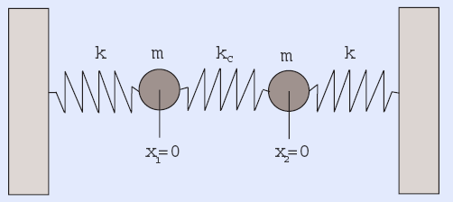

EE 576: Laboratory 4
Nios II and DDA.
Introduction.
For this exercise, you will simulate an analog system using a Digital Differential Analyzer (DDA) and measure the function of the circuit with a NiosII cpu.
Procedure:
Read the DDA page. The physical system you will simulate is the coupled, spring-mass system shown below. The image is from this paper by Alex Gagen and Sean Larson.

The differential equations for this system are:
m(d2x1/dt2) + k(x1) − kc(x2 − x1) + w(dx1/dt) = input (sine wave)
m(d2x2/dt2) + k(x2) − kc(x1 − x2) + w(dx2/dt) = 0
The output is x2.
The natural frequencies are
ωa=sqrt(k/m) and
ωb=sqrt((k+2kc)/m).
Assignment
- Build a DDA which simulates a coupled spring-mass system as described above.
Choose the spring constants and masses so that the natural frequencies of the system are around 500 Hz. Scale the amplitude so that the integrators stay in range.
- Monitor the two variables using an oscilloscope attached to the audio codec to check for clipping or distortion.
- Build a NioII cpu and program it to sweep an input sine wave signal across a range of a few Hz to a few thousand Hz.
- Plot the bode plot for the analog system. The plot can be on the VGA, or in Matlab on the PC.
Be prepared to demo your design to your TA in lab.
Your written lab report should include:
- Mathematical considerations (type of integrator, error expected/measured, approximations)
- The Bode plot (amplitude and phase)
- How you implemented the DDA circuits.
- A heavily commented listing of your Verilog design and GCC code.
Copyright Cornell University May 2007